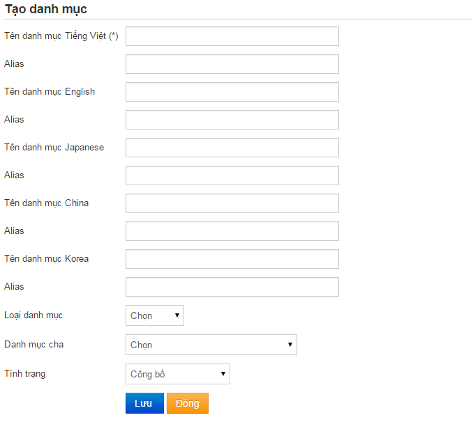

I. Quản lý danh mục
Thông thường khi tạo bài viết người ta phải phân loại bài viết theo từng danh mục Vd: Tin mới, Tin trong ngành, Tin ngoài lề … để phân loại và chứa các bài viết và hiển thị theo nhu cầu của người dùng.
1. Tạo thể loại bài viết
-
Vào menu D. Nội dung -> 2. Quản lý danh mục -> Chọn nút “Thêm”
-
Trong màn hình Thêm thể loại chỉ cần nhập các thông tin: Tên danh mục (nhập tên danh mục các ngôn ngữ khác nếu có). Phần “Danh mục cha” có thể chọn hoặc không.
(Lưu ý: Phần Alias là phần tự động sinh ra nên không cần điền gì hết. Nếu lưu lại mà xuất hiện thông báo Alias đã tồn tại thì hãy gõ alias vào nội dung giống với tiêu đề bài viết và thêm 1 chữ nào đó vô, Alias gõ không cần dấu, vì gõ dấu thì chương trình cũng sẽ tự động bỏ dấu đi. )

-
Bấm Lưu để lưu nội dung vừa tạo.
2. Sửa thể loại
-
Vào menu Nội dung -> Quản lý danh mục
-
Sau đó bấm vào tiêu đề của danh mục cần sửa trong danh sách hoặc nút Sửa phía bên phải của danh mục đó.
-
Trong màn hình thông tin danh mục, nhập nội dung cần thay đổi giống như phần thêm mới danh mục sau đó bấm Lưu để lưu kết quả.
3. Xóa thể loại
-
Xoá thể loại: chọn thể loại cần xoá, sau đó chọn nút Xóa phía bên phải để xoá thể loại đó.